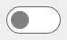

Viewing API List and API Details
You can view the list of registered APIs, activate, delete, or view analytics of a specific API in the Manage APIs page. In addition, you can view API details, modify API details, activate and deactivate an API in the API details page.
Note:
If you encounter any problem viewing the API details with a message that says API loading has failed, this would be because the property watt.server.http.jsonFormat is set to a value that is not parsed(the default value), which API Gateway does not support.

To view API list and API details
1. Click APIs in the title navigation bar.
A list of all registered APIs appears. The APIs are sorted based on their names. When there is more than one API with same name, they are sorted based on their system versions. The list displays the following details:
Column | Description |
Name | Displays API name with an icon representing the API type. API type can be REST, SOAP, OData, and WebSocket. |
Description | Displays brief description of the API. |
Active endpoints | Indicates the active endpoints available for the API and shows how an API can be called. These are the active endpoint indicators:  specifies that the API Gateway endpoint is active. This implies that the API can be called on the API Gateway endpoint. specifies that the API Gateway endpoint is inactive. The API is not exposed by API Gateway and API calls are rejected by API Gateway with HTTP 404 responses. specifies that the API is deployed to one or more Microgateways and therefore has active Microgateway endpoints. The API does not have any active API Gateway endpoints. Any API calls against API Gateway are rejected by API Gateway with HTTP 404 responses. The available Microgateway endpoints can be looked up in the API details screen. The list of active Microgateway endpoints is updated whenever a new Microgateway is registered or a Microgateway is de-registered. If the last Microgateway becomes unavailable, the endpoint indicator no longer shows active Microgateway endpoints  specifies that API Gateway and Microgateway endpoints are active but there is no routing of API calls from API Gateway to Microgateway endpoints. This situation results from deploying an API with an active API Gateway endpoint to one or more Microgateways. The policy enforcement is done on the API Gateway and Microgateways independently. Deactivating and activating the API in API Gateway establishes the routing to the Microgateway endpoints.  specifies that API Gateway and Microgateway endpoints are active. API calls against the API Gateway endpoint are routed to the Microgateway endpoints. If multiple Microgateway endpoints are available, API Gateway applies load balanced routing to the API calls. The load balancing follows the round-robin algorithm. If a Microgateway endpoint becomes unavailable the next endpoint is contacted. If no Microgateway endpoint replies, the API call in API Gateway fails. The list of Microgateways covered by the routing is updated dynamically. The policy definitions in API Gateway are enforced by Microgateways. To activate the routing in API Gateway to Microgateways, the APIs have to be deployed to Microgateway first before activating the API in API Gateway. If the last Microgateway becomes unavailable the routing is not removed implicitly. API calls against API Gateway fail as no Microgateway endpoint is available. specifies that an API has an active AppMesh endpoint, but no active API Gateway endpoint. An AppMesh endpoint is established by performing an APIfy operation. The policy definitions in API Gateway are enforced within the AppMesh. The API is not exposed by API Gateway and API calls are rejected by API Gateway with HTTP 404 responses. specifies that API Gateway and AppMesh endpoints are active. API calls against the API Gateway endpoint are routed to the AppMesh endpoint. The policy definitions in API Gateway are enforced within the AppMesh. |
Version | Displays API version. |
Modified Time | Displays the time when the API was last modified. |
You can perform the following operations in the Manage APIs page.
Filter APIs by
Type,
Activation status,
Team, or
Active endpoints. Select the required API type, status, team or active endpoints to view the APIs based on the provided filters.
Note:
The Team filter is applicable only if you have enabled the Teams feature.
Activate an API by clicking  that denotes an inactive state.
Once an API is activated, the Gateway endpoint is available which can be used by the consumers of this API.
Deactivate an API by clicking that denotes an active state.
Export an API by clicking
Delete an API by clicking in the respective row.
View API analytics by clicking in the respective row.
Publish or Unpublish an API by clicking and respectively.
2. Click any API to view API details.
The API details page displays the basic information, technical information, resources and methods, and specification for the selected API. This page allows you to edit some of the API details. Also, this page provides options to activate or deactivate an API. Click to export, enable or disable mocking, update, and create new version operations.